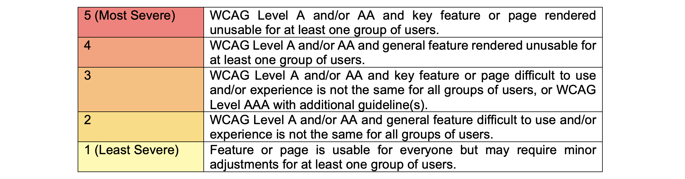
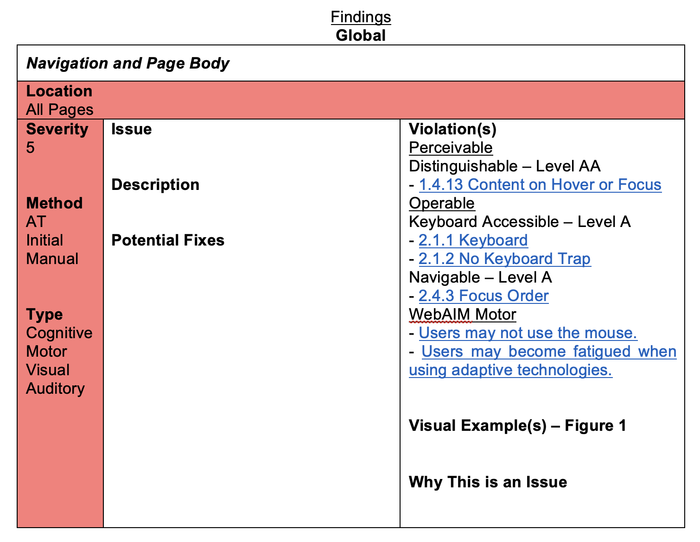

Accessibility Report
Goal
To create an Accessibility Report for 4 pages of a given website (inclusive of the journey between those pages) against
the WCAG 2.1 guidelines, levels A and AA.
Tools
Microsoft Word, Firefox (version 107), Chrome (version 106) Developer Tools, WAVE, VoiceOver (MacOS Screen Reader)
Process
- Easy Checks
- I began by checking each page against the Easy Checks guidelines to get an initial understanding of the website and the company's mission, as well as an overview of the more glaring accessibility issues the site was facing.
- WAVE
- Following a similar procedure as Step 1, I then navigated through each page using WAVE. While some accessibility issues were immediately noted in the primary section of my report, others were placed on a separate list in order to be further evaluated with additional tools.
- Screen Reader and Manual Checks
- While checks were still done page by page, the Screen Reader was especially useful in discovering if navigation between pages was simple or even possible. The manual checks involved using Developer Tools to inspect a page's HTML and confirm the cause of a number of the violations.
- Writing the Report
-
In total, 34 violations were discovered; up to 5.9% of the violations could affect users with auditory impairments, 52.9% with mobility issues, 85.3% with visual impairments, and up to 94.1% with cognitive disabilities.
The range of methods used was meant to help form a comprehensive list that was inclusive of Cognitive, Motor, Visual, and Auditory disabilities.
The findings were organized by page and then severity.
Inspired by other existing rankings, I developed the following severity scale considering usability and difficulty:

-
Personas from GOV.UK
and W3C
were used to help me better understand and express how the violations could affect real users with a range of disabilities.
In the report itself, each finding was color coded by severity and included its location, the method used to find it, a detailed description, an overview of the violation, an exact list of the WCAG guidelines violated, potential fixes, why it mattered, and an optional screenshot from the webpage.
Below is a template example of a violation:

Report
If you would like to see the full report, please send me an email at raveena.s.jain@gmail.com
and let me know whether you are a potential employer or student looking to read it.